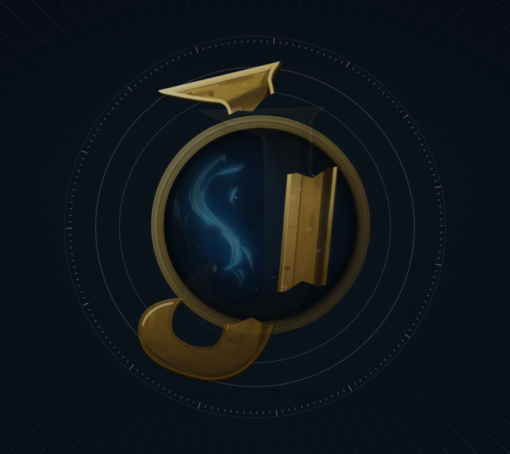
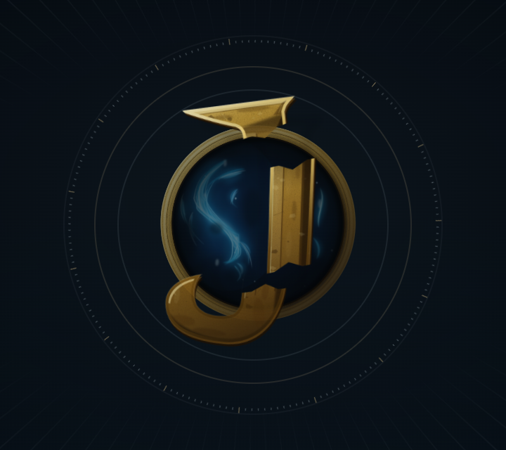
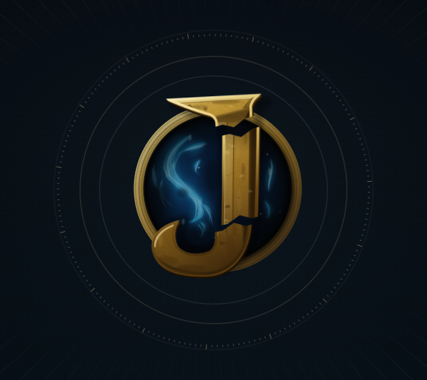
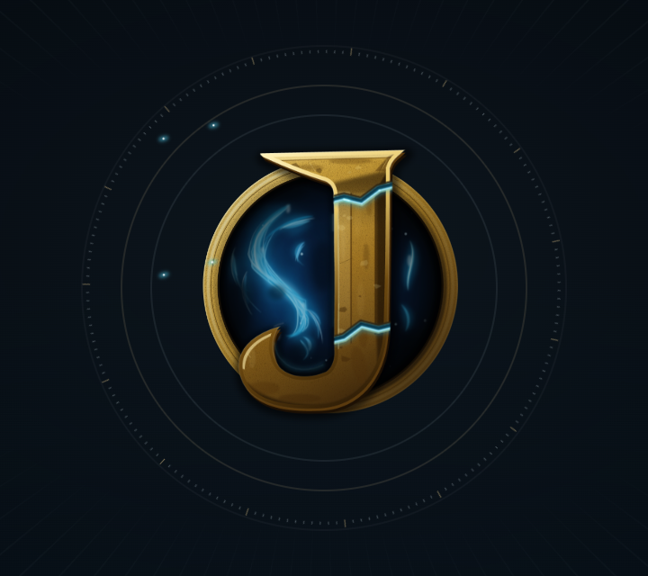
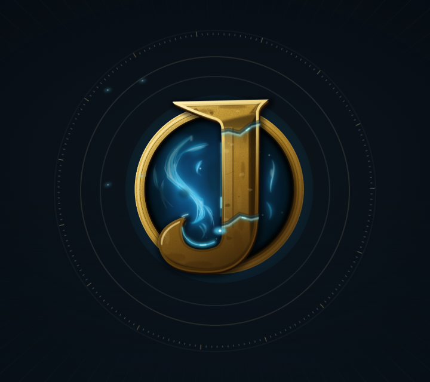

01 · Broken / Dormant
Figma `3714:2` · controlled runtime timeline at 0.650s
Figma key pose

Chrome · 0.650s controlled

Each row pairs one authored Figma key pose with a centered Chrome capture from the current owner-addendum implementation. The live CSS/SVG animation was paused at the exact key-pose timeline value; the runtime never swaps in storyboard images. The uninterrupted browser recording is linked below.
Figma `3714:2` · controlled runtime timeline at 0.650s

Figma `3714:530` · runtime timeline 0.960s


Figma `3714:1058` · runtime timeline 1.370s


Figma `3714:1575` · runtime timeline 2.580s


Figma `3714:2092` · runtime timeline 3.100s


Figma `3714:2609` · controlled runtime timeline at 3.720s after the sheen correction

Figma `3714:3126` · controlled runtime timeline at 4.100s

Chrome review findings: the same-material crown, shaft, and hook move continuously through approach, alignment, and lock; the fused J crossfades only after the pieces seat. The revised activation keeps the authored cyan seam and conduit legible through State 05, carries the spark along its joint route, and clears those transient effects before the sheen/settled hold. The V8 portal, plasma, ring, and contact shadow remain part of the final lockup. Static identity placements remain Variant 01 for prominent uses and Variant 03 optical artwork for compact uses; the subtle-joint permanent-mark treatment is isolated on the separate logo comparison page for owner review.
Source evidence: Figma storyboard `3713:4`, editable rig `3712:2`, canonical exports `3735:2` and `3735:516`, and implementation notes `3737:2` / `3737:37`. The activation timing follows the authored Figma layer notes: joint light peaks at lock and decays through 3.9s; the conduit rises through the 3.0s activation pose; the traveling spark moves for 0.80s from 2.58s and fades only after it reaches the end of its path. The transparent native sheen band retains its authored clip geometry.